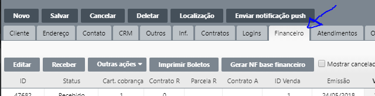
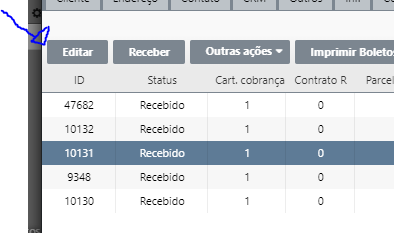
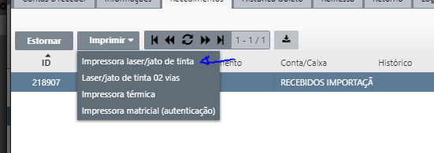

Reimprimir recibo de pagamento
1º
Localize o Cliente e abra a aba 'Financeiro'

2º
Selecione qual recebimento deseja reimprimir
3º
Clique no botão 'Editar'

4º
Aba 'Recebimentos'
5º
Selecione o recebimento e cliquem em 'Imprimir' depois em 'Impressora laser/jato de
tinta'
